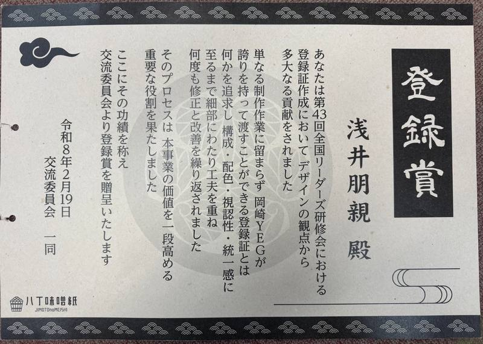

時代とともに変わる「届け方」を、かたどり続けてきました。

チラシ・パンフレット・名刺・冊子・記念誌・販促物まで。伝えたい価値を紙で形にします。

地域素材や加工残渣を紙へアップサイクル。地域の物語を纏った紙を作ります。

生成AIを実務で使う研修・導入支援・業務改善。情報整理から発信まで設計します。
企業や団体の伝えたいことを、紙媒体を中心としたコミュニケーションツールへと整えます。企画・デザイン・印刷・加工までを一貫して支援。


地域の素材や加工残渣・副産物を、地域の物語をまとった紙へと再生。廃棄物削減、ブランド価値向上、観光PR、地域経済の循環へ。
中小企業や各種団体に向けた、生成AIの研修・セミナー・導入支援。文章作成・情報整理・企画立案など、日々の仕事にすぐ使える形で設計します。



「この紙、味噌で
できているんですか？」